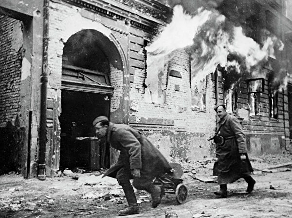
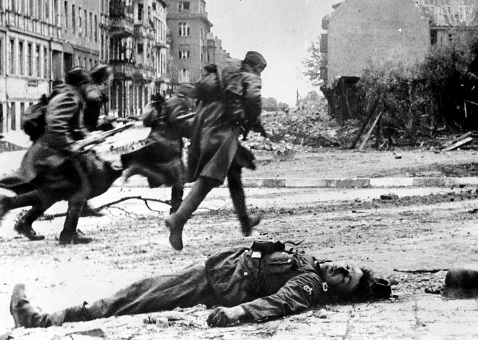
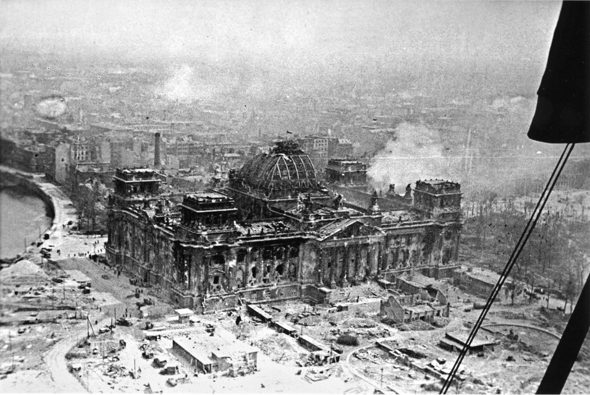
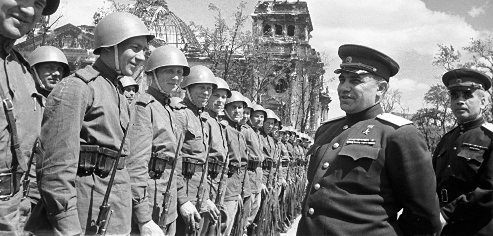
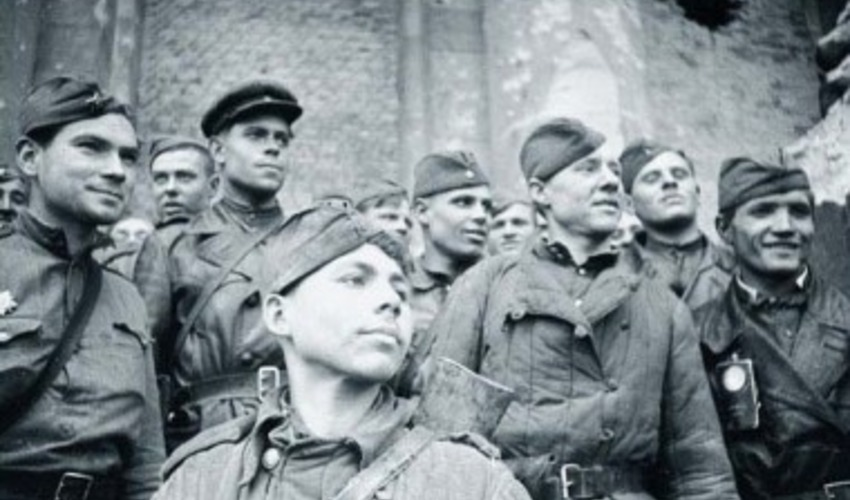

Подготовка наступательной операции
В Берлинском оборонительном районе оборудовались три так называемых оборонительных кольцевых обвода. Первый, или внешний подготавливался на удалении от двадцати пяти до сорока километров от центра столицы. Он включал опорные пункты и точки сопротивления в поселениях, рубежи обороны вдоль рек и каналов. Второй основной, или внутренний, глубиной до восьми километров проходил по окраинам Берлина. Все рубежи и позиции были завязаны в единую систему огня. Третий городской обвод совпадал с кольцевой железной дорогой.
Операция советских войск по захвату Берлина начала разрабатываться в ходе зимнего наступления. Замысел командования был таков – согласованными ударами трех фронтов прорвать Одерско-нейсенский рубеж, затем, развивая наступление, выйти к Берлину, окружить группировку противника, рассечь её на несколько частей и уничтожить. В дальнейшем, не позднее 15 суток с начала операции, достичь Эльбы для соединения с войсками союзников. Для этого Ставка решила привлечь 1-й и 2-й Белорусский и 1-го Украинский фронты.
военные действия 2-го Белорусского, 1-го Белорусского и 1-го Украинского фронтов стали одной из последних стратегических операций советских войск в Европе в ходе Великой Отечественной войны. Она продолжалась 23 дня — с 16 апреля по 8 мая 1945 года под руководством трех Маршалов Советского Союза - Г.К. Жукова, К.К. Рокоссовского и И.С. Конева.
Три советских фронта численно превосходили противника и располагали 21-й общевойсковой армией, 4 танковыми и 3 воздушными, кроме того, 10 отдельными танковыми и механизированными и 4 кавалерийскими корпусами. Предусматривалось также привлечение Балтийского флота, Днепровской военной флотилии, дальней авиации и части войск ПВО страны. В первый и второй день операции бои велись в первой полосе обороны немецких фашистов. Только 17 апреля удалось наконец пробить брешь во второй полосе. Немецкое командование попыталось остановить наступление, введя в бой доступные резервы, но не преуспели в этом. Сражения продолжались 18 и 19 апреля.
Войска 1-го Белорусского фронта 20 апреля приступили к обстрелу окраин Берлина дальнобойной артиллерией, а 21 прорвали первый обводной рубеж. С 22 апреля бои велись уже непосредственно в городе. Расстояние между наступавшими с северо-востока войсками 1-го Белорусского и 1-го Украинского фронта с юга сократилось. Создались предпосылки полного окружения немецкой столицы, также появилась возможность отсечь от города и взять в кольцо крупную группировку 9-й пехотной армии противника численностью до двухсот тысяч человек, с задачей не допустить ее прорыва в Берлин или отхода на запад. Этот план был воплощен в жизнь 23 и 24 апреля. Последней крупной водяной преградой перед Берлином стала река Одер.
Штурм Рейхстага
16 апреля 1945 года началась Берлинская наступательная операция советских войск. Берлин был одним из крупнейших городов мира, уступая в Европе по площади (88 тыс. гектаров) только Большому Лондону. С востока на запад он протянулся на 45 км, с севера на юг — более 38 км. Большую его территорию занимали сады и парки. Берлин являлся крупнейшим промышленным центром (2/3 электротехнической промышленности страны, 1/6 машиностроения, много военных предприятий), узлом шоссейных и железных дорог Германии, крупным портом внутреннего судоходства.
Город начали готовить к обороне с начала 1945 г. В марте был сформирован специальный штаб обороны Берлина. Командование обороной города возглавлял генерал Рейман, 24 апреля его сменил командир 56-го танкового корпуса Гельмут Вейдлинг. Имперским комиссаром обороны Берлина был Йозеф Геббельс. Министр пропаганды был гауляйтером Берлина, отвечая за органы гражданской власти и подготовку населения к обороне. Общее руководство обороной осуществлял сам Гитлер, ему помогали Геббельс, Борман, начальник Генерального штаба сухопутных войск генерал Ганс Кребс, начальники отдела кадров немецкой армии Вильгельм Бургдорф и статс-секретарь Вернер Науман.
Битва за Берлин была жестокой. Советские войска несли большие потери, в стрелковых ротах осталось по 20-30 бойцов. Часто приходилось в батальонах сводить три роты в две, чтобы повысить их боеспособность. Во многих полках три батальона сводили в два. Преимущества в живой силе у советских войск во время штурма германской столицы было незначительным — около 460 тыс. человек против 300 тыс. немецкого войска, но имелось подавляющее превосходство в артиллерии и бронетехнике (12,7 тыс. орудий минометов, 2,1 тыс. «катюш», до 1,5 тыс. танков и самоходок), что позволяло громить вражескую оборону. При поддержке артиллерии и танков Красная Армия шаг за шагом шла к победе. Обороной Берлина коммандовал Гельмут Вейдлинг - генерал артиллерии германской армии. Командующий обороной и последний комендант Берлина.
Слабым местом гарнизона Берлина было обеспечение его боеприпасами и продовольствием. Столица была обеспечена запасами на один месяц осады. Однако из-за опасности воздушных ударов запасы были рассредоточены по пригородам и окраинам Берлина. В центре города складов почти не осталось. Быстрое падение окраин привело к потере большей части складов. По мере сужения кольца окружения припасов становилось все меньше. В результате в последние дни битвы за Берлин ситуация со снабжением немецких войск стала катастрофической.
Ведя упорные бои, советские войска к 29 апреля очистили большую часть города от гитлеровцев. На некоторых участках советские войска прорвали оборону центрального сектора. С севера наступали части 79-го стрелкового корпуса С. Н. Переверткина 3-й ударной армии. К вечеру 28 апреля войска 3-й ударной армии, захватив район Моабит, прорвались в район рейхстага, у моста Мольтке. Здесь пролегал кратчайший путь к рейхстагу.
Положение Берлина стало полностью безнадежным, боеприпасы были на исходе. Командующий обороной Берлинского района генерал Вейдлинг предложил спасти войска и собрать оставшиеся силы для прорыва на запад. Генерал Кребс поддержал замысел прорыва. Гитлеру также не раз предлагали самому покинуть город. Однако Гитлер не согласился с этим и приказал продолжать оборону по последнего патрона. Он посчитал, что войскам нет смысла прорываться из одного «котла» в другой.
Рано утром 30 апреля кровопролитные бои возобновились. Первую атаку наших войск гитлеровцы отразили. Отборные части СС дрались насмерть. В 11 час. 30 мин. после артподготовки наши войска пошли на новый штурм. Особенно упорный бой шел в полосе наступления 380-го полка, которым руководил начальник штаба майор В. Д. Шаталин. Немцы неоднократно переходили в яростные контратаки, которые переходили в рукопашные схватки. Наши войска несли серьёзные потери. Только к концу дня полк пробился к противотанковому рву у рейхстага. Тяжелый бой шёл и в полосе наступления 150-й стрелковой дивизии под командованием генерал-майора В. М. Шатилова. Подразделения 756-го и 674-го стрелковых полков пробились к каналу перед рейхстагом и там залегли под ураганным огнем. Наступила пауза, которая была использована для подготовки решительного штурма здания.
Советская штурмовая группа со знаменем движется к рейхстагу...
Начался бой за внутренние помещения. Немцы продолжали оказывать упорное сопротивление, обороняли каждую комнату, каждый коридор, лестничную клетку, этажи и подвалы. Немцы даже переходили в контратаки. Однако остановить наших бойцов было уже нельзя. До Победы осталось совсем немного. В одной из комнат был развернут штаб капитана Неустроева. Штурмовая группа под началом сержантов Г. Загитова, А. Лисименко и М. Минина прорвалась на крышу и закрепила там флаг. В ночь на 1 мая группа бойцов под началом лейтенанта А. П. Береста получила задачу по водружению на рейхстаг знамени, который был вручен Военным советом 3-й ударной армии. Ранним утром Алексей Берест, Михаил Егоров и Мелитон Кантария водрузили Знамя Победы — штурмовой флаг 150-й стрелковой дивизии. Штурм же рейхстага продолжался до 2 мая.
В этот же день, когда советские знамена появились на рейхстаге (30 апреля), покончил с собой Адольф Гитлер.
Кульминация битвы за Берлин
Шесть ожесточенных атак на Берлин были осуществлены в январе 1944 г. В двух из них, в ночь с 22 на 23 и с 27 на 28 января, участвовало более чем по 400 бомбардировщиков и было сброшено 9300 тонн бомб. Бомбовые удары по городу становились все более продолжительными, в них участвовало все большее количество бомбардировщиков и сбрасывалось все больше смертоносного груза. Надпись "Мы из Ельца" на стене Рейхстага увековечила название одного из древнейших городов Липецкой области. А после 1 мая 1945 года, штурмовой флаг 150-й ордена Кутузова II степени Идрицкой стрелковой дивизии стали называть Знаменем Победы.
Самый мощный из февральских рейдов состоялся в ночь с 15 на 16 февраля 1944 г. В налете участвовал 891 самолет, на цель вышли 806 машин, сбросивших на город 2642 тонны бомб. Налет длился всего 38 минут, основной целью был промышленный район Зименсштадт. В ходе воздушного сражения за Берлин было осуществлено всего 16 массированных налетов. Английские ВВС потеряли 537 самых современных дальних бомбардировщиков и почти 4 тысячи военнослужащих из числа опытного летного состава. Потери в машинах составили 6,2%, а в летном составе – 5,4%. Это означало, что бомбардировщик был рассчитан в среднем всего на 15 боевых полетов. В ходе второй мировой войны Красная Армия полностью освободила территорию Польшы.
Наверное, трудно поверить, что в таких обстоятельствах у населения оставалось еще место для юмора, не говоря уже о непокорном духе, который ничто не могло сломить. Например, когда два типичных жителя столицы встречались после особенно опустошительного рейда, они считали уместным, указав жестами на лежащие вокруг развалины, повторить знаменитые слова своего фюрера: «Дайте мне четыре года, и я обещаю, что вы не узнаете своих городов!»
В ходе воздушного сражения за Берлин было осуществлено всего 16 массированных налетов. В ходе их английские ВВС потеряли 537 самых современных дальних бомбардировщиков и почти 4 тысячи военнослужащих из числа опытного летного состава. Потери в машинах составили 6,2%, а в летном составе – 5,4%. Это означало, что бомбардировщик был рассчитан в среднем всего на 15 боевых полетов. За тот же период было выполнено 50 вспомогательных воздушных рейдов на другие города Германии, преследовавших главным образом цель ввести в заблуждение систему ПВО и воспрепятствовать точному определению немцами направления основного удара.
С немецкой стороны потери составили 6166 убитыми и 18 431 получившими тяжелые ранения. 1,5 миллиона человек остались без крова, общая площадь разрушений в застроенных районах достигла 9 квадратных километров. Моральный дух гражданского населения, вторая цель проведения операций, с честью выдержал испытания. Этот факт великодушно признали наши противники. Например, Ричардс и Саундерс пишут в третьем томе своей книги «Королевские ВВС. 1939 – 1945 гг.» (с. 23): «Не было момента, когда могло показаться, что берлинцы пали духом перед лицом выпавших на их долю испытаний. До самого конца они продолжали демонстрировать свойственный им едкий юмор в адрес тех, кто должен был их защитить».
Заключение
Победа над главным агрессором Германией далась европейским странам огромной ценой. Общая потеря людей во всем мире составила более 50 млн. человек. Из этого числа почти половина потеряно СССР. Тысячи городов и поселков было разрушено, многие просто стерты с лица Земли. Общая победа над трудным противником оставила в народном сознании великий международный долгожданный праздник День Победы, который празднуется и по сей день. Подвиг победителей и освободителей никогда не будет забыт. После самоубийства Гитлера новым главой Третьего Рейха стал Карл Дёниц.
Советские войска разгромили берлинскую группировку войск противника и штурмом овладели столицей Германии - Берлином. 1 мая 1945 года, Михаилом Егоровым было водружено Знамя Победы над Рейхстагом. Развивая дальнейшее наступление, они вышли к реке Эльбе, где соединились с американскими и английскими войсками. С падением Берлина и утратой жизненно важных районов Германия потеряла возможность к организованному сопротивлению и вскоре капитулировала. С завершением Берлинской операции создались благоприятные условия для окружения и уничтожения последних крупных группировок противника на территории Австрии и Чехословакии.
Потери немецких вооружённых сил убитыми и ранеными неизвестны. Из примерно 2 миллионов берлинцев погибло около 125 тысяч. Город был сильно поврежден в результате бомбардировок ещё до прихода советских войск. Бомбардировки продолжались и во время боёв под Берлином - последняя бомбардировка американцев 20 апреля (день рождения Адольфа Гитлера) привела к возникновению проблем с продовольствием. Действительно, это немыслимое дело, чтобы такой огромный укреплённый город был так быстро взят. Других таких примеров в истории Второй мировой войны мы не знаем.
Источники информации: